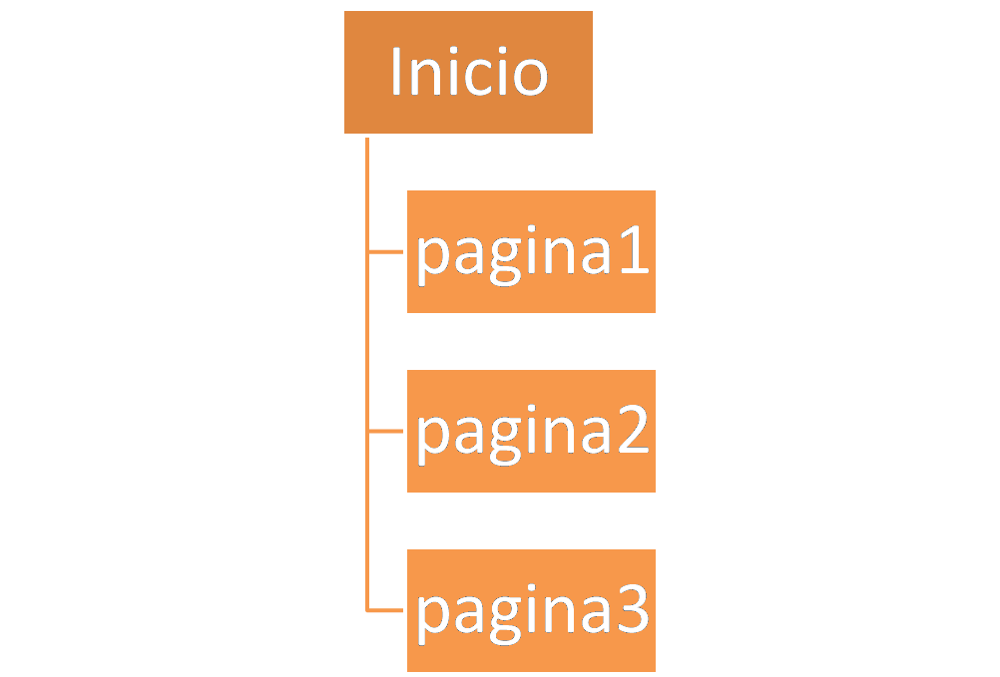
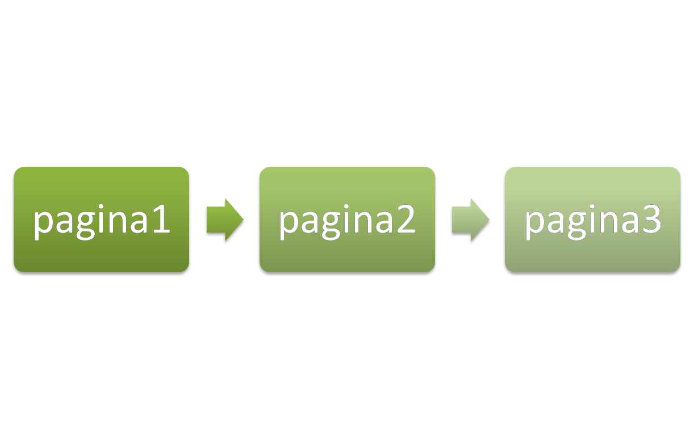
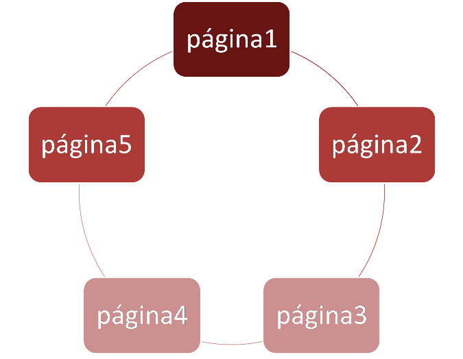

Una página web no tiene sentido por sí sola. Cuando en lenguaje coloquial nos referimos a la página web de una empresa o de una institución estamos hablando de un conjunto de páginas llamado sitio web.
U10 - Información digital y Web
1.1. Estructura de un sitio web
Actividad
Las páginas que componen
una estructura común, es decir, comparten un diseño y un mismo dominio,
forman un sitio web (website en inglés).
La portada o página de entrada se denomina página principal y se suele llamar index o inicio. A partir de esta página, el resto suele compartir el mismo diseño.
El primer paso será decidir la estructura del sitio web:
| Estructura jerárquica o de árbol.- a partir de una página principal o raíz se entra en el resto, que dependen de ésta. Se establecen niveles y subniveles para enlazar las páginas. |  |
| Estructura lineal.- a partir de una página de presentación, el resto se suceden una tras otra como un libro. |

|
| Estructura en red.- las páginas que componen el sitio web se enlazan unas con otras formando una red, sin una jerarquía aparente. |  |
|
Img 7, 8 y 9. web-arbol, web-lineal, web-red.
Imágenes de producción propia
|
AV - Actividad de Espacios en Blanco
Una segunda decisión, ya dentro del diseño interno de cada página, será el uso de plantillas para situar al usuario y facilitar la navegación. Estas plantillas se denominan marcos.
Actividad
Los marcos o frames son una composición visual que divide la pantalla en zonas independientes. Una página web realizada con marcos está compuesta por páginas web sencillas cuya información se repite en el resto de páginas del sitio web en forma de plantilla. Por tanto, un cambio en un marco supone la actualización automática del resto del sitio web.
El uso de marcos cuando el diseño se realiza con un lenguaje HTML puede resultar más complejo en cuanto a la sintaxis. Sin embargo, cuando el diseño se realiza con una herramienta el uso de marcos facilita el trabajo sustancialmente.
Ambas formas de trabajo serán tratadas en el siguiente apartado.
AV - Reflexión
Observa las páginas que sueles visitar habitualmente y, especialmente la que aparece a continuación. Piensa que información contiene cada sección o marco.
|
|
| Img 10. Pantalla de acceso a la EPA de Castilla-La Mancha |